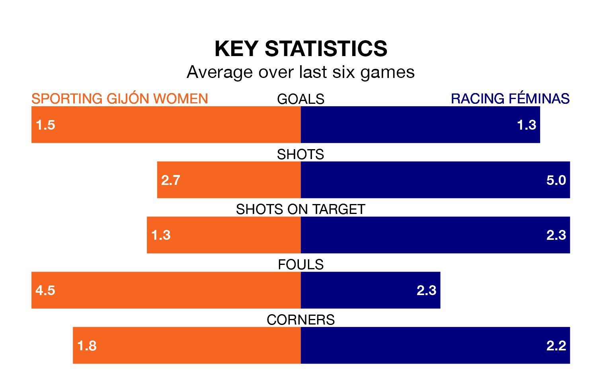

Sporting Gijón Women host Racing Féminas in Sunday's early match looking to bounce back from defeat last time out in Segunda Federación Femenina.
Sporting, who sit zero in the league after 15 games, fell to a 2-1 home defeat to Osasuna II Women on January 7.
They face a Racing Féminas side who also lost their last match, a 5-1 defeat to Real Sociedad II Women, and who sit 13th in the table.
With 17 goals in 15 games so far this season, Sporting are the league's joint--4th-lowest scorers with 1.1 goals per game. And they are conceding more than average, letting in 24 goals at a rate of 1.6 per game.
Racing Féminas, meanwhile, are average scorers, with 1.3 goals per game. They have conceded 0.9 goals per game.
The hosts are in mixed form in Segunda Federación Femenina, with two wins and two draws from their last six games.
With three wins and a draw over that period, the away side's form is slightly better – they have taken 10 points from 18, compared to Sporting's eight.
Updated: 10:50, 10/01/24